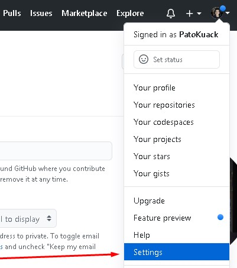
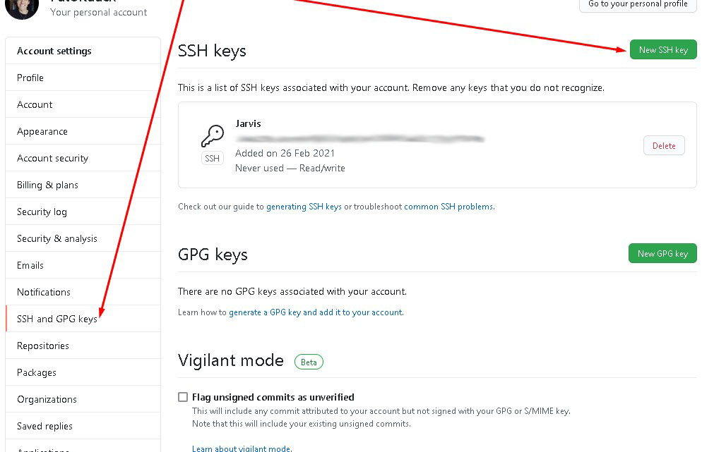
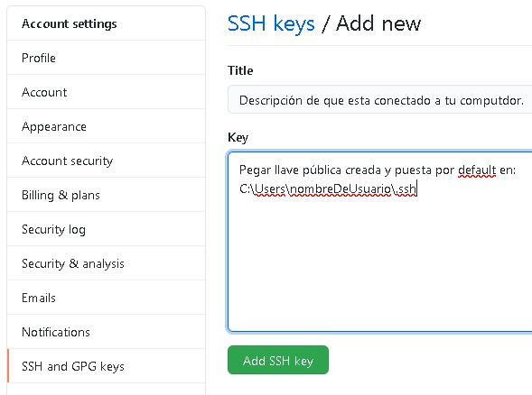
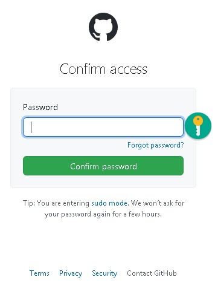
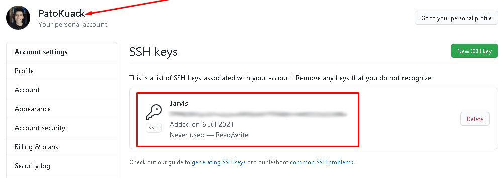
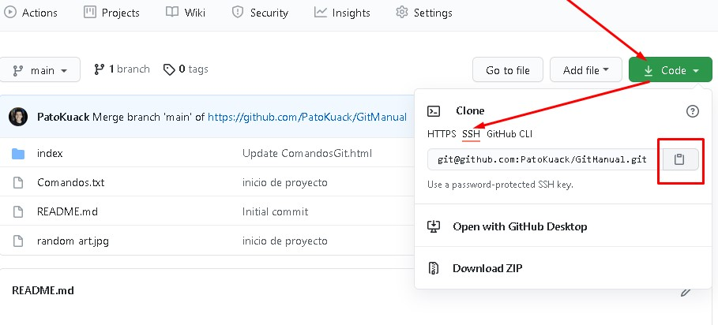

Creación de llave SSH.
Para que haya una mayor seguridad en el proyecto se genera una llave SSH, para esto se abre el consola de GitBash y es recomendable estar posicionado en home (~); esto es importante porque la llave SSH se implementa por computadora y no por proyecto. Esta llave se genera con el siguiente comando:
- ssh-keygen -t rsa -b 4096 -C "correo@mail.com"
-
Con "-t" se especifica el algoritmo que se utilizará para crear la llave que en este caso es rsa.
Con "-b" se especifica que tan compleja es la llave.
Con "4096" se indica la complejidad de la llave desde una perspectiva matemática.
Con "-C" se indica a que correo electrónico va a estar conectada la llave y el cual debe ser el correo que se tiene en el repositorio de GitHub.
Después de ingresar el código se da enter si es que la dirección de almacenamiento sugerido es deseada o sino se puede escribir una dirección deseada.
Se puede ingresar una contraseña con espacios llamada "passphrase" para mayor seguridad. - eval $(ssh-agent -s)
- Verifica que el servidor de llaves esta activo: "Agent" indica que el servidor de SSH esta activo, "pid" es el id del proceso y el número al final indica que el proceso esta activo.
- ssh-add ~/.ssh/id_rsa
-
En home (~) por default se encuentra la carpeta ".ssh" (como empieza por punto se supone que es una carpeta oculta), en donde se encuentran las llaves publicas y privadas.
El comando agregará la llave al sistema, debe contener la ruta de la llave privada.
*La llave privada nunca se comparte.
Una vez que se tiene la llave se debe agregar al entorno (indicarle al sistema operativo que la llave existe).
Después de haber creando un entorno local, se debe conectar con GitHub y se remplaza la conexión HTTPS por una conexión SSH para hacer git pull y git push sin usar contraseñas y seguir manteniendo una conexión segura.
Es importante que se cree una llave única (pública y privada) por cada computadora y por cada usuario.
Vinculación de GitHub con la llave SSH.
Después de crear la llave SSH con los comandos indicados se procede a lo siguiente:
Se abren la sección Settings:
En el apartado SSH and GPG keys se selecciona el botón New SSH key:
En "Title" se coloca una descripción sobre el dispositivo que esta conectada a la llave, ejemplo: Laptop de desarrollo frontend de Pato Kuack.
En "Key" se pega la llave pública del dispositivo al que se vinculará la llave, normalmente estas llaves terminan con el correo que le asignamos al entorno de git y comienzan con "ssh-rsa ...":
Se agrega la clase y se ingresa la contraseña:
Se muestra que se agregó correctamente:
Después se copia el código de clonado SSH de alguno de los repositorios:
Y si al utilizar en la consola GitBash posicionado en un proyecto el comando git remote -v aparecem las URL de HTTPS,entonces se debe cambiar la URL de HTTPS por la que se copió en el paso anterior de SSH, para esto se utiliza el comando git remote set-url origin URL del SSH copiado
Ahora se vuelve a verificar que la URL de SSH esté en los origin con el comando git remote -v